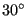
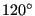

Next: *DAMAGE INITIATION Up: Input deck format Previous: *CYCLIC HARDENING Contents
Keyword type: model definition
This keyword is used to define the number of sectors and the axis of symmetry in a cyclic symmetric structure for use in a cyclic symmetry calculation (structural or 3D-fluid).
It must be preceded by two *SURFACE cards defining the nodes belonging to the left and right boundary of the sector and a *TIE card linking those surfaces. The axis of symmetry is defined by two points a and b, defined in global Cartesian coordinates.
For structural calculations there are eight parameters, N, NPHYS, NGRAPH, TIE,
CONTACT, ELSET,
MATRIX and CHECK. The parameter N,
specifying the number of (numerical) sectors, is required, TIE is required if more than
one cyclic symmetry tie is defined. The number of sectors can exceed the
number of physical sectors (NPHYS), so-called oversampling, which means that the waves along the
circumference will not be closed. The same applies if N is a non-integer,
which is also allowed. The number of physical sectors can be specified with
the parameter NPHYS. If not, NPHYS is set equal to N. Specifying NPHYS is important
in case of oversampling if NGRAPH  1 or if
multistage MPC's are defined (cf. *TIE).
1 or if
multistage MPC's are defined (cf. *TIE).
The parameter NGRAPH is optional and indicates for how many sectors the solutions should be stored in .frd format. Setting NGRAPH=N for N sectors stores the solution for the complete structure for subsequent plotting purposes. Default is NGRAPH=1. The rotational direction for the multiplication of the datum sector is from the dependent surface (slave) to the independent surface (master).
The parameter TIE specifies the name of the tie constraint to which the cyclic symmetry model definition applies. It need not be specified if only one *TIE card has been defined.
The parameter CONTACT is only needed if surface-to-surface penalty contact is defined between the dependent and independent cyclic symmetry surfaces. The effect is that the elements adjacent to the independent cyclic symmetry surface are rotated to the dependent side by an angle calculated from the physical number of sector. It does not lead to a change in any contact definition. This option only works if both the cyclic symmetric dependent and independent surfaces defined by the tie to which the *CYCLIC SYMMETRY CARD refers are face based.
The element set specified by ELSET specifies the elements to which the parameter NGRAPH should be applied. Default if only one cyclic symmetry *TIE card is used in the input deck is the complete model.
The MATRIX parameter is needed if a substructure, the matrices for which were read from file, is present in the model. The value of MATRIX is the name of the matrix, which contains at most 4 characters, e.g. MATRIX=TEST for a substructure with the name TEST. The parameters ELSET and MATRIX are mutually exclusive.
The last parameter, CHECK, specifies whether CalculiX should compare the sector angle based on its geometry with its value based on NPHYS. If the deviation exceeds 0.01 radians the program issues an error message and stops. If CHECK=NO is specified, the check is not performed, else it is. If the user wants to find eigenmodes with fractional nodal diameters, i.e. vibrations for which the phase shift is smaller than the sector angle, a value of N has to be specified which exceeds the number of sectors in the model. In that case the check should be turned off. Notice that in the case of the check being turned off the sector angle based on the geometry is still calculated for other purposes, it is just not compared to the sector angle based on the value of N.
Several *CYCLIC SYMMETRY MODEL cards within one input deck defining several cyclic symmetries about the same axis within one and the same model are allowed. This, however, always is an approximation, since several cyclic symmetries within one model cannot really exist. Good results are only feasible if the values of N for the different *CYCLIC SYMMETRY MODEL cards do not deviate substantially. Care should be taken that, when looking in the direction of the cyclic symmetry axes, all dependent surfaces in the tie definitions are on the same side. Then, naturally, this also applies to the independent surfaces.
The *CYCLIC SYMMETRY MODEL card triggers the creation of cyclic symmetry multiple point constraints between the slave and master side. If the nodes do not match on a one-to-one basis a slave node is connected to a master face. To this end the master side is triangulated. The resulting triangulation is stored in file TriMasterCyclicSymmetryModel.frd and can be viewed with CalculiX GraphiX.
First line for all but fluid periodic calculations:
Second line:
Example: *CYCLIC SYMMETRY MODEL, N=12, NGRAPH=3 0.,0.,0.,1.,0.,0.
defines a cyclic symmetric structure consisting of  
Example files: segment, fullseg, couette1per, couettecyl4, cycliccontact.